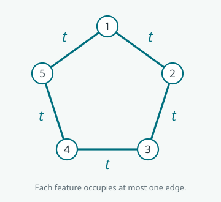

I learned about this distinction from Meyer Scetbon, and I am grateful to him for introducing it to me, as well as for the work we did together with Marco Cuturi on factorizing optimal transport couplings [1]. It is a small piece of matrix geometry with surprisingly concrete consequences.
When we say that a matrix is positive, do we mean that its entries are positive, that its quadratic form is nonnegative, or that it can be built from nonnegative features? These properties sound similar, but they answer different questions. The last requirement is stronger than the first two combined.
This post develops the matrix distinction behind the discussion of positive features in Section 10.4 of my book [2]. We will keep matrices center stage, build explicit examples and counterexamples, and only at the end turn to kernels and a constructive proof for generalized Gaussians.
Two kinds of nonnegativity
We study real symmetric matrices \(A\); their factors need not be square. Write \(A\succeq0\) when \(A\) is positive semidefinite (PSD):
\[ z^\top Az\ge0\qquad\text{for every }z\in\mathbb R^n. \]This is a spectral condition: every eigenvalue is nonnegative. It is different from entrywise nonnegativity, written \(A\ge0\), which means \(A_{ij}\ge0\) for every entry. For example,
\[ \begin{pmatrix}1&2\\2&1\end{pmatrix}\ge0 \quad\text{but has eigenvalue }-1, \] \[ \begin{pmatrix}1&-1\\-1&1\end{pmatrix}\succeq0 \quad\text{but has negative entries}. \]A matrix satisfying both conditions is doubly nonnegative:
\[ \mathrm{DNN}_n=\{A\in\mathbb S^n:A\succeq0,\ A\ge0\}. \]The word “doubly” refers to these two orders, not to row and column sums as in a doubly stochastic matrix. Checking membership in \(\mathrm{DNN}_n\) is straightforward: inspect the entries and the eigenvalues.
Nonnegative features: a stronger requirement
A PSD matrix is a Gram matrix: \(A=BB^\top\) for some real \(B\), whose rows are feature vectors. A matrix is completely positive if these features can all be chosen nonnegative:
\[ \mathrm{CP}_n=\{BB^\top:B\in\mathbb R_+^{n\times r},\ r\text{ finite}\}. \]Equivalently, \(A\) is a finite sum of nonnegative rank-one Gram matrices,
\[ A=\sum_{\ell=1}^r b_\ell b_\ell^\top,\qquad b_\ell\ge0. \]Each feature contributes a nonnegative interaction between every pair of objects that share it. No cancellation is possible. Immediately,
\[ \mathrm{CP}_n\subseteq\mathrm{DNN}_n: \qquad z^\top Az=\|B^\top z\|^2\ge0, \quad A_{ij}=\sum_\ell B_{i\ell}B_{j\ell}\ge0. \]Here is a completely explicit example:
\[ B=\begin{pmatrix}1&0\\1&1\\0&1\end{pmatrix},\qquad A=BB^\top=\begin{pmatrix}1&1&0\\1&2&1\\0&1&1\end{pmatrix}. \]The first and third objects do not interact, while the middle object shares one feature with each. The factor may be rectangular; its smallest possible width is the cp-rank. It need not be the principal spectral square root. Indeed, for this same example,
\[ (A^{1/2})_{13}=\frac{\sqrt3-3}{6}<0. \]A negative entry in one chosen square root or Cholesky factor therefore does not disprove complete positivity. One must rule out every nonnegative Gram factorization. Nor is this just ordinary nonnegative matrix factorization \(A=UV^\top\): the same factor is required on both sides. Every nonnegative matrix trivially factors as \(AI\), which says nothing about complete positivity. This matrix notion is also distinct from completely positive linear maps in quantum information.
In dimension two the two cones coincide. For \(A=\left(\begin{smallmatrix}a&b\\b&c\end{smallmatrix}\right)\in\mathrm{DNN}_2\) with \(a>0\), the factor
\[ B=\begin{pmatrix}\sqrt a&0\\b/\sqrt a&\sqrt{c-b^2/a}\end{pmatrix}\ge0 \]satisfies \(BB^\top=A\). If \(a=0\), positive semidefiniteness forces \(b=0\), and the factorization is immediate. A classical, substantially less elementary theorem says that \(\mathrm{CP}_n=\mathrm{DNN}_n\) for every \(n\le4\) [3]. The first obstruction occurs at five.
A useful closure calculus
Proposition 1 (constructing more completely positive matrices). The cone \(\mathrm{CP}_n\) is convex, closed, and stable under entrywise products. If \(A\in\mathrm{CP}_n\) and \(R\in\mathbb R_+^{m\times n}\), then \(RAR^\top\in\mathrm{CP}_m\).
Proof: concatenate features, multiply features, and normalize their trace
If \(A=BB^\top\) and \(D=CC^\top\), then \(sA+tD\), for \(s,t\ge0\), is factored by the concatenation \([\sqrt sB\ \sqrt tC]\). Also \(RAR^\top=(RB)(RB)^\top\), with \(RB\ge0\). For the entrywise product, pair every column of \(B\) with every column of \(C\):
\[ A\odot D=\sum_{\ell,m}(b_\ell\odot c_m)(b_\ell\odot c_m)^\top. \]To prove closedness, consider the compact set
\[ \mathcal K=\{uu^\top:u\ge0,\ \|u\|=1\}. \]The trace-one slice of \(\mathrm{CP}_n\) is exactly \(\operatorname{conv}(\mathcal K)\). In a finite-dimensional space the convex hull of a compact set is compact: Carathéodory’s theorem bounds the number of points needed in a convex combination. Here the trace-one hyperplane has dimension \(n(n+1)/2-1\), so at most \(n(n+1)/2\) rank-one terms suffice.
For a convergent sequence of CP matrices, normalize by the trace and use this compact slice. If the limiting trace is zero, the PSD limit is the zero matrix, which is also CP. This proves closedness. In particular, an integrable nonnegative mixture of CP matrices is CP. \(\square\)
The width bound is an existence result, not a promise that a small or useful factor is easy to find [4]. Complete positivity imposes an extra geometric constraint, not just another easy spectral check.
Five points are enough to separate the cones
Let \(C\) be the adjacency matrix of a cycle on five vertices. For \(t\ge0\), set
\[ A_t=I+tC= \begin{pmatrix} 1&t&0&0&t\\ t&1&t&0&0\\ 0&t&1&t&0\\ 0&0&t&1&t\\ t&0&0&t&1 \end{pmatrix}. \]
Theorem 1 (an explicit gap). With \(\varphi=(1+\sqrt5)/2\),
\[ A_t\in\mathrm{DNN}_5\ \Longleftrightarrow\ 0\le t\le\varphi^{-1}, \] \[ A_t\in\mathrm{CP}_5\ \Longleftrightarrow\ 0\le t\le\tfrac12. \]Thus \(A_{3/5}\) is positive definite and entrywise nonnegative, but not completely positive.
Proof: compare an eigenvalue test with a diagonal-mass budget
The spectral test. The Fourier vectors on the cycle give the eigenvalues \(2\cos(2\pi k/5)\) of \(C\). Their minimum is \(-\varphi\), so the smallest eigenvalue of \(A_t\) is \(1-\varphi t\). Entrywise nonnegativity already holds for \(t\ge0\).
The positive factorization when \(t\le1/2\). Writing \(E\) for the five undirected edges and \(e_i\) for coordinate vectors,
\[ A_t=t\sum_{\{i,j\}\in E}(e_i+e_j)(e_i+e_j)^\top+(1-2t)I. \]Every term is CP, with nonnegative coefficients.
The obstruction when \(t>1/2\). Suppose \(A_t=\sum_\ell b_\ell b_\ell^\top\), with \(b_\ell\ge0\). A zero entry between nonadjacent vertices forces \((b_\ell)_i(b_\ell)_j=0\) for every column. Thus each column’s support is a clique of the cycle: a single vertex or a single edge, never three vertices. For an edge-supported column, \(a^2+b^2\ge2ab\). Summing over all columns gives
\[ 5=\operatorname{tr}A_t \ge2\sum_{\{i,j\}\in E}(A_t)_{ij}=10t. \]Hence \(t\le1/2\). Finally, \(3/5<\varphi^{-1}\), so the counterexample is strictly positive definite. \(\square\)
A block diagonal copy with an identity matrix gives counterexamples in every larger dimension. The gap between the cones is a classical topic in matrix optimization [5]; this particular cycle family makes the reason visible without solving a factorization problem.
Even strictly positive entries do not suffice
Perhaps the zero entries caused the problem? They made it easy to prove, but they are not essential. Let \(J=\mathbf1\mathbf1^\top\) and define
\[ \overline A=I+\tfrac35C+\tfrac1{10}J. \]Its entries are \(1.1\) on the diagonal, \(0.7\) on cycle edges, and \(0.1\) elsewhere. It is positive definite, since \(I+\frac35C\) is and \(J\succeq0\). Yet it is not CP.
A convenient separating witness is the Horn matrix,
\[ H=J-2C. \]It is copositive: \(z^\top Hz\ge0\) for all \(z\ge0\). Therefore every \(A=\sum b_\ell b_\ell^\top\in\mathrm{CP}_5\) satisfies \(\langle H,A\rangle=\sum b_\ell^\top Hb_\ell\ge0\), where \(\langle H,A\rangle=\operatorname{tr}(H^\top A)\). But
\[ \langle H,\overline A\rangle=5-6+\tfrac12=-\tfrac12. \]Proof that the Horn witness is copositive
It suffices to prove \(\sum_{\{i,j\}\in E}z_i z_j\le(\sum_i z_i)^2/4\). Normalize \(\sum_i z_i=1\). Choose a maximizer of the edge sum on the probability simplex with as few nonzero coordinates as possible.
If two positive coordinates lie at nonadjacent vertices, keep their sum fixed and move mass between them. The edge objective is affine in this redistribution, since there is no edge between them. Moving all their mass to one endpoint cannot decrease the objective and reduces the support, a contradiction. The support must therefore be a clique. It has at most two vertices, where the edge sum is at most \(s(1-s)\le1/4\). This is the simple cycle case of the Motzkin–Straus argument [6].
\[ z^\top Hz=(\textstyle\sum_i z_i)^2 -4\sum_{\{i,j\}\in E}z_i z_j\ge0. \]The case \(z=0\) is immediate. The displayed negative pairing then excludes a nonnegative Gram factorization of \(\overline A\). \(\square\)
Entrywise positivity and spectral positivity are tests on the matrix we see. Complete positivity asks for a common nonnegative latent representation. The latter can fail even when both former tests hold strictly.
Finally: the associated kernel notions
A real symmetric kernel \(k(x,y)\) is doubly nonnegative if every finite Gram matrix \(K_{ij}=k(x_i,x_j)\) is DNN, and completely positive if every such matrix is CP. The first property is just the combination of a PSD kernel and pointwise nonnegative values. For the second, a constructive sufficient condition is a nonnegative feature representation
\[ k(x,y)=\int\phi(x,z)\phi(y,z)\,d\mu(z),\qquad \phi(x,z)\ge0. \]Indeed, on any finite point cloud, this is an integral of nonnegative rank-one matrices, hence a CP matrix by Proposition 1. The same closure rules allow nonnegative sums, products, and finite-valued nonnegative mixtures of such kernels. A finite matrix has a finite factor, but one should not expect a single finite-dimensional exact feature map for a kernel on an entire continuum.
A positive kernel which still has no positive features
The matrix obstruction has a smooth kernel counterpart from the book. On the circle, set
\[ k_\lambda(x,y)=\lambda+\cos^2\!\big((x-y)/2\big),\qquad\lambda=\tfrac1{20}. \]It is strictly positive pointwise and PSD, since
\[ k_\lambda(x,y)=\lambda+\tfrac12 +\tfrac12\cos x\cos y+\tfrac12\sin x\sin y. \]The trigonometric features are signed. On five equally spaced angles \(x_i=2\pi i/5\), the same Horn witness gives
\[ \langle H,K\rangle=5\lambda+5-\frac{5\sqrt5}{2} =\frac{21}{4}-\frac{5\sqrt5}{2}<0. \]To check the value, note that \(\sum_{i,j}K_{ij}=25(\lambda+1/2)\), while \(\langle C,K\rangle=10(\lambda+\cos^2(\pi/5))\). Thus this finite Gram matrix is not CP, and the kernel cannot have nonnegative features. A positive PSD kernel is not automatically positively factorable.
Gaussian features, then generalized Gaussians
Gaussian kernels are better behaved: they have genuinely positive features. More generally, the same is true of
\[ k_{p,\epsilon}(x,y)=\exp\!\left(-\frac{\|x-y\|^p}{\epsilon}\right), \qquad 0<p\le2,\quad\epsilon>0. \]This includes the Gaussian at \(p=2\) and the Laplace kernel at \(p=1\). The scale-mixture mechanism is classical, going back to Schoenberg’s theory [7]. Here is a direct proof of the stronger positive-feature statement, spelling out the generalized Gaussian construction in the book.
Theorem 2 (constructive complete positivity of generalized Gaussians). Put \(a=p/2\). Choose a nonnegative random variable \(\Lambda\) with Laplace transform
\[ \mathbb E e^{-t\Lambda}=e^{-t^a/\epsilon}\qquad(t\ge0), \]independently of \(Z\sim\mathcal N(0,I_d)\). For any fixed origin \(x_0\), define
\[ \phi(x;\Lambda,Z)= \exp\!\left(\sqrt{2\Lambda}\,Z^\top(x-x_0)-2\Lambda\|x-x_0\|^2\right)>0. \]Then
\[ k_{p,\epsilon}(x,y)=\mathbb E[\phi(x;\Lambda,Z)\phi(y;\Lambda,Z)]. \]Consequently every finite generalized-Gaussian Gram matrix is completely positive, in every Euclidean dimension.
Proof: a Gaussian moment calculation and a positive scale mixture
First, hold the scale fixed. Write \(u=x-x_0\), \(v=y-x_0\). Conditional on \(\Lambda=\lambda\), the Gaussian moment-generating formula gives
\[ \begin{aligned} \mathbb E_Z[\phi(x)\phi(y)\mid\Lambda=\lambda] &=e^{\lambda\|u+v\|^2-2\lambda(\|u\|^2+\|v\|^2)}\\ &=e^{-\lambda\|x-y\|^2}. \end{aligned} \]Then randomize the scale. Taking \(t=\|x-y\|^2\) in the Laplace transform gives exactly \(e^{-\|x-y\|^p/\epsilon}\). When \(p=2\), there is no mixing at all: simply use \(\Lambda=1/\epsilon\).
Lemma 1: why the positive mixing variable exists for p between zero and two
For \(0<a<1\), consider Poisson jumps on \((0,\infty)\) with intensity
\[ \nu(ds)=\frac{a}{\epsilon\Gamma(1-a)}s^{-1-a}\,ds. \]These can be constructed independently on dyadic intervals. There are almost surely finitely many jumps larger than one, because \(\nu((1,\infty))<\infty\). The sum of smaller jumps is finite almost surely, because its expectation \(\int_0^1s\,\nu(ds)\) is finite. Let \(\Lambda\) be the sum of all jump sizes.
Keeping only jumps larger than \(\delta>0\) gives a compound Poisson variable. Its Laplace transform is \(\exp(-\int_\delta^\infty(1-e^{-ts})\nu(ds))\): condition on the Poisson number of jumps and sum its generating series. As \(\delta\downarrow0\), bounded convergence and integration by parts give
\[ \int_0^\infty(1-e^{-ts})s^{-1-a}\,ds =\frac{\Gamma(1-a)}a\,t^a, \]hence \(\mathbb E e^{-t\Lambda}=e^{-t^a/\epsilon}\). Equivalently, \(\Lambda=\epsilon^{-1/a}S_a\), where \(S_a\) is a normalized positive stable variable. This is the Bernstein-function representation of the power \(t^a\) [8]. \(\square\)
All feature products are nonnegative, so averaging is justified by Tonelli’s theorem. Their expectations are the finite kernel values computed above. The resulting finite Gram matrices belong to the closed CP cone by Proposition 1. \(\square\)
The same argument works after replacing \(x\) by \(Lx\). In particular, the anisotropic Gaussian \(e^{-(x-y)^\top M(x-y)/\epsilon}\), for any \(M\succeq0\), is CP: take \(L=M^{1/2}\).
The restriction \(p\le2\) is sharp. For \(p>2\), take three points \((-h,0,h)\) on the line and \(v=(1,-2,1)\). Their Gram matrix satisfies
\[ v^\top Kv=6-8e^{-h^p/\epsilon}+2e^{-(2h)^p/\epsilon} =\frac{2(4-2^p)}{\epsilon}h^p+O(h^{2p})<0 \]for sufficiently small \(h>0\). It is not even PSD. Concretely, \(p=4\), \(\epsilon=1\), and \(h=1/2\) give \(v^\top Kv\approx-0.7795\).
Finally, an exact positive representation is not automatically a fast approximation. Sampling \(r\) independent features gives an unbiased, entrywise-positive Gram approximation \(\widetilde K=BB^\top\), with \(B_{i\ell}=\phi(x_i;\Lambda_\ell,Z_\ell)/\sqrt r\). But the Monte Carlo summands, the products \(\phi(x)\phi(y)\), can have enormous or even infinite variance. At \(x=y\ne x_0\), their second moment is \(\mathbb E e^{8\Lambda\|x-x_0\|^2}\), which is infinite for \(p<2\). Complete positivity guarantees the geometry, not a useful rank-versus-accuracy bound. The controlled positive features of Scetbon and Cuturi address that additional approximation question [9].
Bibliography
- Meyer Scetbon, Marco Cuturi, and Gabriel Peyré. Low-Rank Sinkhorn Factorization. ICML, PMLR 139, 9344–9354, 2021. Paper.
- Gabriel Peyré. Optimal Transport for Machine Learners. Section 10.4, “Sketching Sinkhorn in Linear Time,” paragraph “Positive features and complete positivity.” Book · Relevant pages.
- John E. Maxfield and Henryk Minc. On the Matrix Equation X′X=A. Proceedings of the Edinburgh Mathematical Society 13(2), 125–129, 1962. Paper.
- Abraham Berman and Naomi Shaked-Monderer. Completely Positive Matrices. World Scientific, 2003. Book.
- Samuel Burer, Kurt M. Anstreicher, and Mirjam Dür. The difference between 5 × 5 doubly nonnegative and completely positive matrices. Linear Algebra and its Applications 431(9), 1539–1552, 2009. Paper.
- Theodore S. Motzkin and Ernst G. Straus. Maxima for graphs and a new proof of a theorem of Turán. Canadian Journal of Mathematics 17, 533–540, 1965. Paper.
- Isaac J. Schoenberg. Metric Spaces and Positive Definite Functions. Transactions of the American Mathematical Society 44(3), 522–536, 1938. Paper · Scan.
- René L. Schilling, Renming Song, and Zoran Vondraček. Bernstein Functions: Theory and Applications. Second edition, De Gruyter, 2012. Book.
- Meyer Scetbon and Marco Cuturi. Linear Time Sinkhorn Divergences using Positive Features. Advances in Neural Information Processing Systems 33, 2020. Paper.